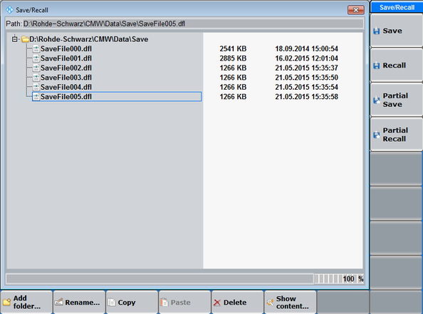
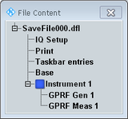

The "Save/Recall" dialog stores the current instrument setup and recalls setups.
To open the dialog box, press the SAVE key on the (soft-) front panel, or the  button.
button.

The "Save/Recall" dialog provides the following control softkeys and hotkeys.
Saves the current configuration (or a part of it) to a file. Save files are stored in a default directory on the system drive.
- If a folder is selected, a new save file SaveFile<no>.dfl is created. <no> is 000 or the number of the last save file plus one.
- If a save file is selected, this file is overwritten.
"Partial Save" opens a dialog for selection of the information to be saved. For a description of selectable parts, see "Show content".
Remote command:Recalls the selected save file (or a part of it) and activates the stored settings.
"Partial Recall" opens a dialog for selection of the information to be recalled. For a description of selectable parts, see "Show content".
Remote command:Adds a subfolder to the selected folder.
Renames / deletes the selected folder or file.
Copies / pastes a folder or file. An object can only be copied from one folder to another. The destination folder must not yet contain an object of the same type with the same name.
Opens a dialog showing which information is contained in the currently selected file.

- "IQ Setup": "Digital IQ" settings in the "Setup" dialog
- "Print": "Print" dialog settings
- "Taskbar entries": information which firmware applications are active, i.e. are listed in the task bar
- "Data Appl.Control": settings of the "Data Application Control" software
- "Base": most settings in the base system (except the settings listed above)
- "Instrument <n> – <Firmware Application>": all settings of the firmware application